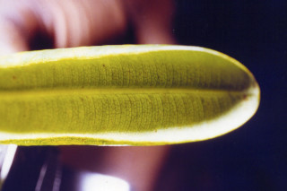
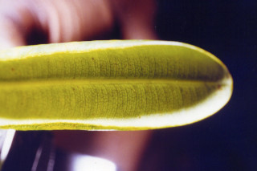

Trees up to 12 m tall.
12 ಮೀ ಎತ್ತರದವರೆಗೆ ಬೆಳೆಯುವ ಮರಗಳು.
12 മീറ്റര് വരെ ഉയരത്തില് വളരുന്ന മരങ്ങള്.
மரங்கள் 12 மீ. உயரம் வரை வளரக்கூடியது.
Bark brown.
ತೊಗಟೆ ಕಂದು ಬಣ್ಣದಲ್ಲಿರುತ್ತದೆ.
തവിട്ടുനിറത്തിലുള്ള പുറംതൊലി.
மரத்தின் பட்டை ப்ரவுன் நிறமானது.
Branchlets obtusely quadrangular, glabrous.
ಕಿರುಕೊಂಬೆಗಳು ಅತೀಕ್ಷ್ಣವಾದ 4 ಕೋನಗಳನ್ನು ಹೊಂದಿರುತ್ತವೆ ಹಾಗೂ ರೋಮರಹಿತ ವಾಗಿರುತ್ತವೆ.
അരോമിലവും ഉപകോണാകാര ചതുഷ്കോണോടുകൂടിയതുമായ ഉപശാഖകള്
சிறிய நுனிக்கிளைகள் குறுக்குவெட்டுத் தோற்றத்தில் நான்கு கோணங்களுடையது, உரோமங்களற்றது.
Latex yellow.
ಸಸ್ಯಕ್ಷೀರ ಹಳದಿ ಬಣ್ಣ ಹೊಂದಿರುತ್ತದೆ .
മഞ്ഞനിറത്തിലുളള സ്രവം.
சாறு மஞ்சள் நிறமானது.
Leaves simple, opposite, decussate; petiole 1-1.8 cm long, canaliculate, glabrous, slightly sheathing at base; lamina 5-11 x 1.3-2.5 cm, narrow oblong, apex obtuse, base acute, margin revolute, coriaceous, glabrous; secondary_nerves nearly perpendicular to midrib, parallel; tertiary_nerves finely reticulate, impressed above in older leaves.
ಎಲೆಗಳು ಸರಳವಾಗಿದ್ದು,ಕತ್ತರಿಯಾಕಾರದ ಅಭಿಮುಖ ಜೋಡನಾ ವ್ಯವಸ್ಥೆಯಲ್ಲಿ-ರುತ್ತವೆ; ಎಲೆತೊಟ್ಟುಗಳು ರೋಮರಹಿತವಾಗಿದ್ದು 1 ರಿಂದ 1.8 ಸೆಂ.ಮೀ ಉದ್ದಹೊಂದಿದ್ದು,ಕಾಲುವೆಗೆರೆ ಸಮೇತವಾಗಿರುತ್ತವೆ ಹಾಗೂ ಬುಡಭಾಗದಲ್ಲಿ ಒರೆಯನ್ನು ಹೊಂದಿರುತ್ತವೆ;ಎಲೆಪತ್ರಗಳು 5 -11 X1. 3 –2.5 ಸೆಂ.ಮೀ ಗಾತ್ರ, ಸಂಕುಚಿತ ಚತುರಸ್ರದ ಆಕಾರ, ಚೂಪಲ್ಲದ ತುದಿ, ಚೂಪಾದ ಬುಡ, ಹಿಂಸುರುಳಿಯಾದ ಅಂಚು ಹೊಂದಿದ್ದು ರೋಮರಹಿತವಾಗಿದ್ದು, ತೊಗಲನ್ನು ಹೋಲುವ ಮಾದರಿಯ-ಲ್ಲಿರುತ್ತವೆ; ಎರಡನೇ ದರ್ಜೆಯ ನಾಳಗಳು ಹೆಚ್ಚೂ ಕಡಿಮೆ ಮಧ್ಯನಾಳಕ್ಕೆ ಲಂಬವಾಗಿ-ರುತ್ತವೆ ಮತ್ತು ಸಮಾಂತರದಲ್ಲಿರುತ್ತವೆ; ಮೂರನೇ ದರ್ಜೆಯ ನಾಳಗಳು ಸೂಕ್ಷ್ಮವಾದ ಜಾಲಬಂಧ ನಾಳವಿನ್ಯಾಸದಲ್ಲಿರುತ್ತವೆ ಮತ್ತು ಅತಿ ಬಲಿತ ಎಲೆಗಳ ಮೇಲ್ಭಾಗದಲ್ಲಿ ಅಚ್ಚೊತ್ತಿದಂತಿರುತ್ತವೆ.
സമ്മുഖ, ഡെക്കുസേറ്റ്, ക്രമത്തിലുള്ള ലഘുപത്രങ്ങള്; ഇലഞെട്ടിന് 1 സെ.മി. മുതല് 1.8 സെ.മി വരെ നീളവും ചാലോട് കൂടിയതും അരോമിലവും, കീഴറ്റത്ത് ചെറുതായി പോളയോടുകൂടിയതുമാണ്; പത്രഫലകത്തിന് 5 സെ.മി മുതല് 11 സെ.മി വരെ നീളവും 1.3 സെ.മി മുതല് 2.5 സെ.മി വരെ വീതിയും, വീതികുറഞ്ഞ ആയതാകാരവും, പത്രാഗ്രം ഉപകോമാകാരവും ആണ്, പത്രാധാരം നിശിതമാണ്, അരികുകള് പിന്നാക്കം മടങഅങിയതാണ്; ചര്മ്മില പ്രകൃതം, അരോമിലം; സമാന്തരമായതും, മുഖ്യസിരക്ക് ഏതാ് ലംബമായി നില്ക്കുന്നതുമായ ദ്വിതീയ ഞരമ്പുകള്; മൂത്ത ഇലകളില്, മുകളില് വ്യക്തമായ വിധത്തിലുള്ളതും, നന്നായി ജാലിതമായിട്ടുള്ളതുമായ ത്രിതിയ ഞരമ്പുകള്.
இலைகள் தனித்தவை, எதிரடுக்கமானவை, குறுக்குமறுக்கமானவை; இலைக்காம்பு 1-1.8 செ.மீ. நீளமானது, இலைக்காம்பு குறுக்குவெட்டுத் தோற்றத்தில் கேனாலிகுலேட், உரோமங்களற்றது, தளத்தில் சிறிய உறை போன்ற அமைப்புடையது; இலை அலகு 5-11 X 1.3-2.5 செ.மீ. குறுகிய நீள்சதுர வடிவானது, அலகின் நுனி மழுங்கியது, அலகின் தளம் கூரியது, அலகின் விளிம்பு பின்புறம் வளைந்து (ரெவலுட்) காணப்படும், கோரியேசியஸ், கீழ்பரப்பு உரோமங்களற்றது; இரண்டாம் நிலை நரம்புகள் ஒன்றுக்கொன்று இணையானவை; மூன்றாம் நிலை நரம்புகள் நெருக்கமான வலைப்பின்னல் போன்றது, இலையுதிரும்போது அலகின் மேற்பரப்பில் பள்ளமாக அமைந்தவை.
Flowers dioecious; male flowers in terminal cymes; female flowers one or two in upper axils.
ಗಂಡು ಮತ್ತು ಹೆಣ್ಣು ಹೂಗಳು ಪ್ರತ್ಯೇಕ ಸಸ್ಯಗಳ- ಲ್ಲಿರುತ್ತವೆ;ಗಂಡು ಹೂಗಳು ತುದಿಯಲ್ಲಿನ ಮಧ್ಯಾರಂಭಿ ಪುಷ್ಪಮಂಜರಿಯಲ್ಲಿರುತ್ತವೆ; ಹೆಣ್ಣು ಹೂಗಳು ಒಂದು ಅಥವಾ ಎರಡರ ಸಂಖ್ಯೆಯಲ್ಲಿ ಮೇಲಿನ ಅಕ್ಷಾಕಂಕುಳಿನಲ್ಲಿರುತ್ತವೆ.
ആണ്-പെണ് പൂക്കള് വ്യത്യസ്ത മരങ്ങളിലുാകുന്നു; ആണ് പൂക്കള് കക്ഷീയ സൈമുകളില് ഉാകുന്നു; പെണ് പൂക്കള് ഒന്നോ രാേ എണ്ണം മുകളിലെ കക്ഷങ്ങളില് ഉാകുന്നു.
மலர்கள் ஒர்பாலானவை, ஈரகம் கொண்டவை; ஆண்மலர்கள் தண்டின் நுனியில் காணப்படும் சைம்; பெண்மலர்கள் ஒன்று அல்லது இரண்டு மலர்களாக தண்டின் நுனியிலுள்ள இலைக்கோணங்களில் காணப்படுபவை.
Berry oblong to subglobose with persistent style and broad stigma, usually 1-seeded.
ಬೆರ್ರಿ ಗಳು ಚತುರಸ್ರದಿಂದ ಉಪಗೋಳಾಕಾರದಲ್ಲಿದ್ದು ಶಾಶ್ವತವಾದ ಶಲಾಕೆ ಮತ್ತು ವಿಶಾಲವಾದ ಶಲಾಕಾಗ್ರ ಹೊಂದಿದ್ದು ಸಾಮಾನ್ಯವಾಗಿ ಒಂದು ಬೀಜವನ್ನೊಳಗೊಂಡಿರುತ್ತವೆ.
സാധാരണയായി ഒറ്റവിത്തോടുകൂടിയതും, വീതിയേറിയ പരാഗണസ്ഥലത്തോടുകൂടിയ ഉറച്ചു നില്ക്കുന്ന ജനിദണ്ഡുള്ളതുമായ, കായ, ആയതാകാരം തൊട്ട് ഉപഗോളാകാരം വരെയുള്ള ആകൃതിയോടുകൂടിയതുമായ ബെറിയാണ്.
முழுச்சதைகனி (பெர்ரி), நீள்சதுரம் முதல் கோளம் வடிவம் போன்றவை, நிலையான சூலகத்தண்டையும் மற்றும் அகன்ற சூலகமுடிச்சையும் கொண்டது, பொதுவாக 1-விதையுடையது.

 
